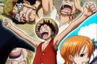
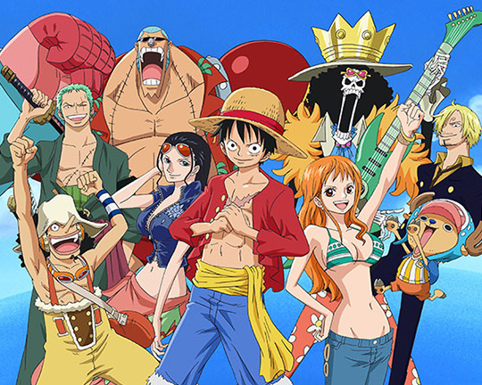
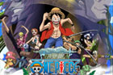

Guía para empezar
Tu primera travesía por One Piece
Si vas a descubrir la historia por primera vez, comienza por el principio y disfruta cómo se forma la tripulación.
Leer artículoLA BITÁCORA
Guías y artículos para disfrutar del viaje, sin revelar los grandes desenlaces.

Guía para empezar
Si vas a descubrir la historia por primera vez, comienza por el principio y disfruta cómo se forma la tripulación.
Leer artículo
Personajes
La tripulación funciona porque cada integrante aporta algo que los demás necesitan.
Leer artículo
El mundo
La imaginación transforma el viaje en una experiencia llena de lugares inesperados.
Leer artículoGuía para empezar · Lectura breve
Si vas a descubrir la historia por primera vez, comienza por el principio y disfruta cómo se forma la tripulación.
La aventura comienza en East Blue, donde Luffy empieza a reunir compañeros. Más que correr hacia los arcos posteriores, vale la pena prestar atención a las promesas y motivaciones de cada personaje.
Puedes explorar el manga o la adaptación animada. Elige el formato que prefieras y consulta las plataformas oficiales disponibles en tu país. Esta guía evita revelar desenlaces para que vivas el viaje a tu ritmo.
Texto de divulgación escrito para este proyecto. Referencias: One Piece oficial y Toei Animation.
Volver a los artículos ↑Personajes · Lectura breve
La tripulación funciona porque cada integrante aporta algo que los demás necesitan.
Luffy no navega solo. Nami orienta la ruta; Sanji prepara la comida; Chopper cuida la salud del grupo. Sus funciones muestran cómo una aventura depende tanto del valor como de la cooperación.
Además de sus habilidades, los compañeros comparten confianza. Sus objetivos personales dan profundidad al recorrido y hacen que cada nueva isla sea más que un destino.
Texto de divulgación escrito para este proyecto. Referencias: One Piece oficial y Toei Animation.
Volver a los artículos ↑El mundo · Lectura breve
La imaginación transforma el viaje en una experiencia llena de lugares inesperados.
One Piece utiliza el mar como un escenario abierto a la sorpresa. Los personajes encuentran sociedades, paisajes y desafíos que cambian de una isla a otra. Skypiea es uno de los ejemplos más reconocibles de esa libertad creativa.
La exploración invita a mantener la curiosidad: cada lugar permite descubrir nuevas costumbres y plantear preguntas sobre la libertad, las promesas y la convivencia.
Texto de divulgación escrito para este proyecto. Referencias: One Piece oficial y Toei Animation.
Volver a los artículos ↑